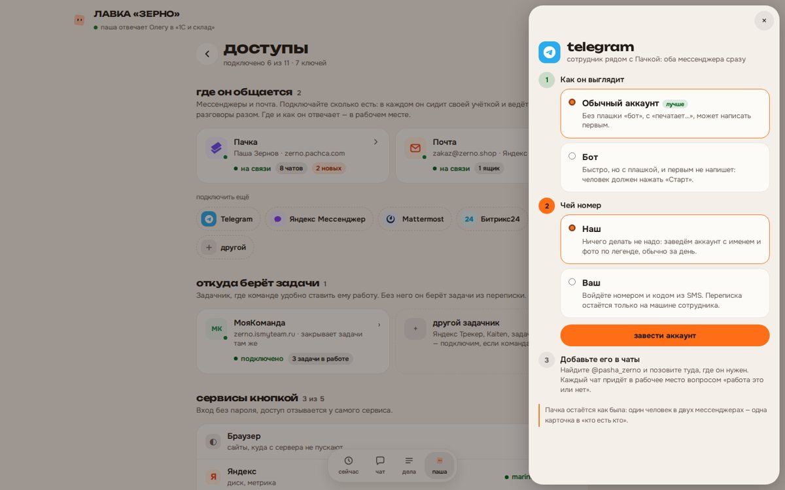
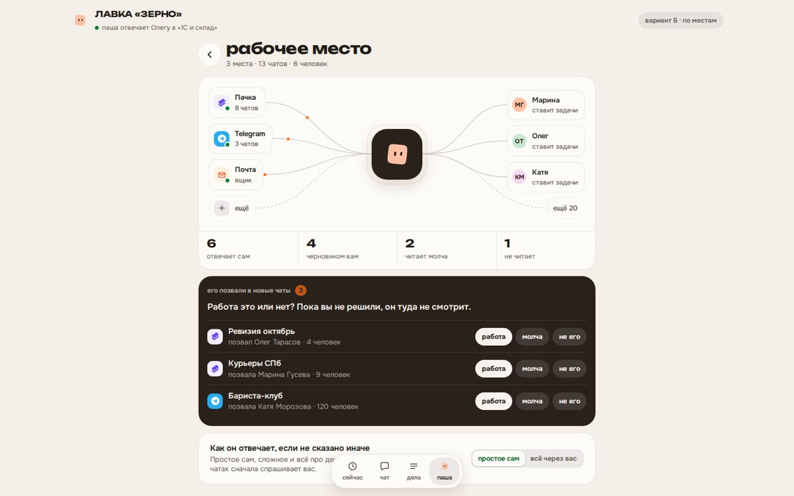
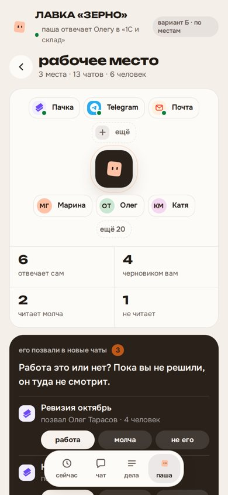
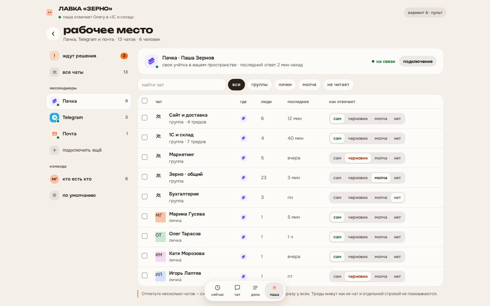
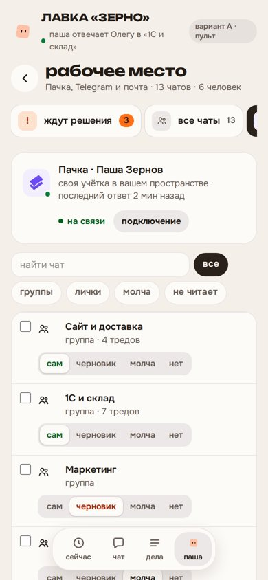
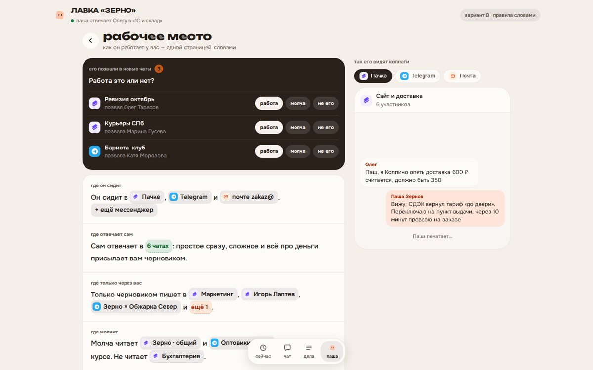
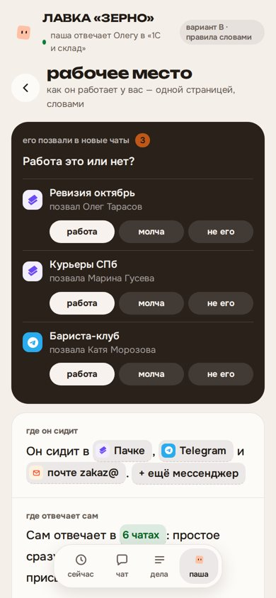

макеты кабинета · 14 октября
рабочее место и доступы: три варианта
Сотрудник сидит сразу в нескольких мессенджерах, а подключаются они там же, где остальные сервисы. В рабочем месте остаётся то, что настраивают каждую неделю: где он отвечает, где молчит и кто есть кто. Данные выдуманные, лавка «Зерно» из демо.
что сейчас мешает
- Мессенджер у сотрудника один. Клиенту на Пачке нужен ещё Telegram, а поставить его некуда: выбор нового мессенджера заменяет старый.
- Подключение спрятано внутри первого шага, со списком прав токена и техническими названиями. Почта при этом подключается в «Доступах», задачник — во втором шаге, браузер — снова в «Доступах».
- Чаты идут одним списком: у клиента на Пачке 40 строк, 17 из них треды (девять подряд с одним названием и припиской «тред»), есть чаты с номером вместо имени. Новые чаты решаются через переход к этому списку.
- Режимов два, «слушает» и «молча». Чат «только черновики» держится подписью в названии, а общий режим «что отвечает наружу» лежит в другом разделе.
- «Кто есть кто» — 48 человек одним списком и форма на четыре поля под ним.
как делим

Telegram ставится рядом с Пачкой
Вид (аккаунт или бот), чей номер, и дальше чаты сами приходят в рабочее место вопросом «работа это или нет».
три варианта рабочего места
Всё нажимается: режимы чатов, решения по новым чатам, шторки подключения. На телефоне открываются так же.

Б. по местам советую
чем хорошОдна колонка, как весь кабинет, на телефоне ничего не ломается. Сверху карта «мессенджеры → Паша → люди» и итог цифрами, ниже по карточке на каждый мессенджер.
чем хужеПри сорока чатах страница длинная. Лечится поиском и тем, что треды свёрнуты: из тех 40 строк останется 23.


А. пульт
чем хорошСлева мессенджеры, справа таблица чатов с фильтрами. Можно отметить десять чатов и сменить режим всем сразу. Быстрее всего, когда чатов много.
чем хужеЭто экран для компьютера, на телефоне таблица превращается в список. По виду это уже админка, а не кабинет.


В. правила словами
чем хорошВся настройка читается фразами: «сам отвечает в 6 чатах, черновиком — в Маркетинге и личке Игоря». Справа видно, как он выглядит в каждом мессенджере. Понятнее всех владельцу, который открыл экран впервые.
чем хужеПерекладывать чаты между режимами дольше, чем в таблице. С десятками чатов фразы становятся списками.

что меняется внутри
- Машина сотрудника слушает несколько мессенджеров сразу. Почта уже так работает рядом с мессенджером, остальные встают тем же способом, у каждого чата метка, откуда он.
- В кабинете вместо одного мессенджера список подключений. Чаты нынешних клиентов переезжают как есть, настройки не теряются.
- Режим «черновик» становится настройкой чата, а не подписью в названии.
- Общий режим «простое сам или всё через вас» переезжает из профиля сюда.
Образцы: Front (подключение канала и раздача по входящим), Intercom (каналы отдельно от входящих), Gorgias (выбор каналов с предпросмотром), Linear, Mistral, Lindy (списки подключений) — Mobbin. Карточки подключений и схема-лучи — 21st.dev.